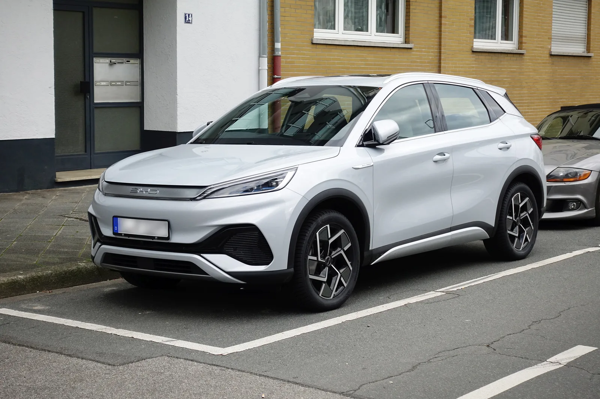

▲ BYD는 IAA 모빌리티를 유럽 공략의 주요 무대로 활용해왔다 ⓒ Wikimedia Commons
중국 전기차 1위 업체 BYD가 2027년 해외 수출 목표를 다시 한번 끌어올렸다. 로이터 등 외신에 따르면 BYD 경영진은 최근 브로커리지(증권사) 대상 그룹 미팅에서 2027년 해외 출하량이 250만 대를 넘어설 것이라는 목표를 제시했다.
이번 상향은 2026년 목표 역시 190만~200만 대 수준으로 재차 올려잡은 직후에 나왔다. 이는 기존 목표(150만 대)를 웃도는 수준이자, 2025년 실적 대비 거의 두 배에 해당하는 규모다. 실제로 BYD는 2026년 1~8월 누적 해외 출하량 116만 대(전년 동기 대비 86% 증가)를 기록하며 목표 상향의 근거를 뒷받침했다. IAA 모빌리티(뮌헨)와 IAA 트랜스포테이션(하노버) 등 유럽 무대에서의 존재감 확대도 이 같은 자신감의 배경으로 꼽힌다.
1. 2027년 250만 대 — 무엇이 근거인가
이번 목표 상향은 BYD가 직접 낸 공식 보도자료가 아니라, 증권사들이 경영진과의 그룹 미팅 내용을 인용해 알린 형태로 시장에 전해졌다. 블룸버그, 로이터 등 주요 외신은 복수의 브로커리지 리포트를 인용해 2027년 해외 출하량이 250만 대를 넘어설 것이라는 가이던스를 보도했다.
| 연도 | 수출 목표(대략) | 비고 |
|---|---|---|
| 2025년(실적) | 2026년 목표의 절반 수준 | 2026년 목표가 전년 대비 "거의 두 배"로 언급됨 |
| 2026년(재상향 목표) | 약 190만~200만 대 | 기존 전망 대비 상향 조정 |
| 2027년(신규 목표) | 250만 대 이상 | 이번에 처음 제시된 수치 |
📍 왜 지금 '해외'인가
BYD는 중국 내수 시장에서 격화된 가격 경쟁('가격전쟁')으로 수익성 압박을 받고 있다. 외신들은 이번 수출 목표 상향을 내수 둔화를 해외 판매 확대로 상쇄하려는 전략으로 해석한다. 해외 시장은 평균판매단가(ASP)와 마진이 상대적으로 높다는 점도 배경으로 꼽힌다.
2. IAA 2026에서 드러난 BYD의 존재감 — 전동 트럭 유로NCAP 5성
같은 시기 독일 하노버에서 열린 상용차 전시회 IAA 트랜스포테이션 2026에서도 BYD의 유럽 공략 의지가 확인됐다. BYD 상용차 부문은 3.5톤급부터 44톤급까지 아우르는, 유럽 시장 기준 역대 가장 넓은 전동 트럭 라인업을 선보였다.

▲ 아토3 등 승용 라인업은 이미 유럽 도로에서 흔히 볼 수 있을 만큼 판매가 늘었다 ⓒ Wikimedia Commons
행사의 하이라이트는 4×2 트랙터 ETT 44였다. 이 모델은 유럽 안전 평가기관 유로NCAP(Euro NCAP)으로부터 5성 안전등급과 도심 안전기준인 'CitySafe' 인증을 함께 받았다 — 장거리 전동 트럭으로는 유로NCAP 평가를 받은 첫 사례로 알려졌다.
✅ ETT 44 주요 제원(외신 종합)
· 블레이드 배터리 651kWh 탑재, 최대 600km 주행거리
· 최고 출력 750kW(약 1,000마력)
· 메가와트 충전(MCS) 지원 — 최대 1.5MW로 20~80% 충전에 약 20분
· 유로NCAP 세부 평가에서 안전운전(Safe Driving) 89%, 충돌회피(Crash Avoidance) 73% 기록
· 다만 73%의 충돌회피 점수는 선두권 경쟁 모델 대비 낮아, 일부 운전자 보조 시스템은 추가 보완이 필요하다는 평가도 함께 나왔다
· 유럽 시장 실제 인도는 2027년 2분기부터 시작될 예정으로 알려졌다
유로NCAP 상용차 부문의 평가 결과 원문은 아래에서 직접 확인할 수 있다. 유로NCAP 발표 바로가기
3. 2026년 목표도 재상향 — 배경엔 '선박 부족'
흥미로운 점은 BYD의 수출 확대를 막아온 병목이 생산능력이 아니라 '운송 능력'이었다는 점이다. 외신 보도에 따르면 BYD 경영진은 그동안 수출 물량이 제조 캐파가 아니라 전용 카캐리어(자동차 운반선) 확보 속도에 의해 제한돼 왔다고 설명했다.

▲ 씰(Seal)과 같은 승용 세단 라인업이 해외 시장 점유율 확대를 이끌고 있다 ⓒ Wikimedia Commons
📍 자체 선단 확장이 목표 상향의 근거
BYD는 최근 수년간 자체 자동차 운반선을 잇달아 발주·인도받으며 물류 병목을 해소해왔다. 여기에 해외에서의 시장점유율 지속 확대와 현지 생산 거점 증가가 맞물리면서, 경영진이 2026·2027년 두 해의 목표치를 동시에 끌어올릴 만한 근거가 마련됐다는 것이 외신의 분석이다.
4. 유럽 현지화 전략 — 헝가리 공장과 가격 경쟁력
유럽은 BYD 수출 확대 전략의 핵심 축이다. 유럽연합(EU)의 중국산 전기차 관세를 우회하고 현지 공급망을 구축하기 위해, BYD는 헝가리 남부 서게드(Szeged)에 조립 공장을 짓고 있다.
| 항목 | 내용 |
|---|---|
| 헝가리 서게드 공장 | 연초 시범생산 시작, 2026년 4분기부터 본격 가동 예정 |
| 첫 생산 모델 | 유럽 도심형 소형 해치백 돌핀 서프(Dolphin Surf) |
| 추가 거점 검토 | 튀르키예 공장 프로젝트는 일시 보류, 스페인 등 제2 유럽 거점 물색 중 |
| 판매망 확대 | 2026년 말까지 유럽 내 판매거점 2,000곳 목표 |
| 전략 목적 | EU 관세 회피, 배터리 등 부품 공급망 현지화로 가격 경쟁력 확보 |

▲ 씨라이언7 등 SUV 라인업도 아시아·유럽 각지 모터쇼에서 잇달아 공개되며 판매 지역을 넓히고 있다 ⓒ Wikimedia Commons
✅ 현지화가 필요한 이유
· EU는 중국산 순수 전기차에 추가 상계관세를 부과 중 — 역내 생산 비중을 높이면 관세 부담 완화
· 부품·배터리까지 유럽에서 조달하면 운송비·환율 리스크도 함께 줄어듦
· BYD는 유럽 내 배터리 공장 건설도 검토 중인 것으로 알려져, 단순 조립을 넘어선 공급망 이전을 준비하고 있다
5. 한국 시장과의 연관성 — 왜 지켜봐야 하나
BYD의 글로벌 수출 확대 전략은 한국 시장과도 무관하지 않다. 한국은 이미 승용 BYD 오토(BYD AUTO)를 통해 아토3, 씰, 씨라이언7 등 라인업을 순차 출시하며 딜러망을 넓혀온 상태다.
📍 물류·생산 확대가 한국 공급 안정성에도 영향
수출 목표 상향의 배경이었던 카캐리어(자동차 운반선) 확충은 한국행 물량의 선적 여력에도 직접적인 영향을 준다. 그동안 국내 일부 모델의 초기 출고 지연이 선박·물류 사정과 무관하지 않았던 만큼, BYD가 밝힌 선단 확대는 한국 시장 공급 안정성 개선으로 이어질 가능성이 있다. 다만 유럽向 물량이 최우선 배정될 가능성도 있어, 국내 인도 일정에 어떤 영향을 줄지는 지켜봐야 한다.
또한 IAA에서 확인된 상용차(트럭) 라인업 강화 흐름은, 향후 BYD가 한국 상용차 시장(전동 트럭·버스 부문)에서도 존재감을 넓힐지에 대한 관심으로 이어질 만하다. 국내에서는 아직 승용 라인업 중심이지만, 유럽에서 검증된 상용차 안전성이 다른 시장 진출의 명분으로 활용될 여지가 있다.
6. 요약
BYD는 2027년 해외 수출 목표를 250만 대 이상으로 새로 제시했고, 2026년 목표도 190만~200만 대 수준으로 다시 올렸다. 중국 내수 가격전쟁 속에서 상대적으로 마진이 높은 해외 판매를 성장축으로 삼겠다는 전략이 뚜렷해진 셈이다.
IAA 트랜스포테이션 2026에서는 전동 트럭 ETT 44가 유로NCAP 5성 안전등급을 받으며, 승용차에 이어 상용차 부문에서도 유럽 시장 신뢰를 쌓기 시작했다. 헝가리 서게드 공장의 4분기 가동은 관세 회피와 가격 경쟁력 확보를 동시에 노린 현지화 전략의 핵심 축이다.
한국 소비자 입장에서는 BYD의 선단·생산능력 확대가 국내 물량 공급 안정성에 긍정적 영향을 줄 수 있는지, 그리고 유럽에서 검증되고 있는 상용차 라인업이 국내에도 상륙할지가 다음 관전 포인트다.